Space Robotics Lab · Tohoku University · Report 05
Moonwalk 2.0Does it stand while you build it?
Report 04 turned the structures into the robot’s job list. This report plays that list against physics: the pad and the dome built block by block in Isaac Sim, the iterations that followed — friction, tilt, centre of gravity, ribs and frames — and the temporary staples that finally make the dome buildable.
▼ SCROLL TO THE SITE
01 · Orientation
Turning to the south pole
The Moon’s axis is tilted only about 1.5°. At the pole the Sun never climbs more than a few degrees: light arrives sideways, high ground can stay lit for most of the year, and low ground can stay dark for ever.
01 · The site
Connecting Ridge
Within 150 km of the pole the crater rims catch the low Sun while their floors never see it. Report 02 scored four NASA candidate regions; the pad and dome in this report are built — in simulation — on Connecting Ridge, between Shackleton and de Gerlache: long sunlit periods, a shadowed floor within reach, and a shoulder flat enough for the pad.
LOLA is the laser altimeter on NASA’s Lunar Reconnaissance Orbiter: it measured the height of the ground, and this layer is that height as colour. Blue is low — the crater floors — and pale is high — the rims. The base site sits on Connecting Ridge, the high crest between Shackleton and de Gerlache, because at the pole height is what buys sunlight. Schematic relief here; the report version uses the LOLA 5 m polar DEM through JSMARS.
lowhigh
01 · Site data · light
Illumination, percent of the year
High ground near the pole stays lit most of the year; the best points on the Shackleton–de Gerlache crest — where the base site sits — exceed 80 %, and the longest nights there last only 3–5 days. Schematic from the basemap here; the report layer is the Mazarico average-illumination map.
0 %> 80 %
01 · Site data · cold
Diviner cold traps
Crater floors that never see the Sun stay below 110 K — cold enough to keep water ice for billions of years. The blue marks these cold traps; Shackleton’s floor, at about 90 K, is the one next door. The base site on Connecting Ridge stays up on the warm, sunlit rim beside it, close enough to haul ice from. Schematic here; the report layer is the Diviner maximum-temperature map.
< 110 Kwarm
02 · Landing zone
ispace Mission 4: the 87° line
The landing latitude given for ispace’s Mission 4 is 87° South or higher: a circle about 91 km in radius around the pole. Connecting Ridge (89.5°S) and de Gerlache Rim 2 (88.7°S) are inside it; Malapert Massif (86.0°S) and Nobile Rim 1 (85.4°S) are outside.
≥ 87°Sinsideoutside
02 · Site selection
The pick: Connecting Ridge
Two candidates survive both filters — NASA’s 2022/24 lists and ispace’s ≥ 87°S band. Report 02’s weighted score put de Gerlache Rim 2 first overall (27) with Connecting Ridge at 23; the build in this series stays on Connecting Ridge for the best light and the closest ice, 16 km from the pole. The method is site-agnostic: the same pad, dome and job list transfer to de Gerlache Rim 2 unchanged.
02 · Site selection
From the south pole to two candidate sites
The site was not chosen in one step. Four filters, each narrower than the last, take the whole Moon down to two squares of ground: the south pole for its light and ice; NASA’s Artemis III candidate regions for terrain vetted for crewed landings; the four-site shortlist scored against the programme’s rules in Report 02; and the landing capability of the transport expected to serve the base. Each step is drawn below on the same azimuthal equidistant map of the pole.
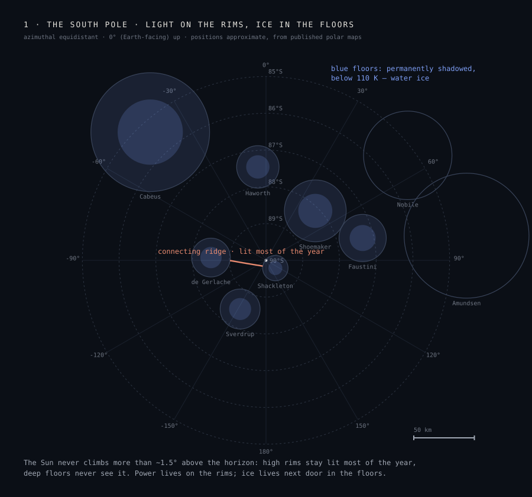
STEP 1 · The pole sets the terms: the Sun stays within ≈ 1.5° of the horizon, so high rims hold near-continuous light while the deep floors below them hold water ice below 110 K. Power and resources sit side by side nowhere else on the Moon.
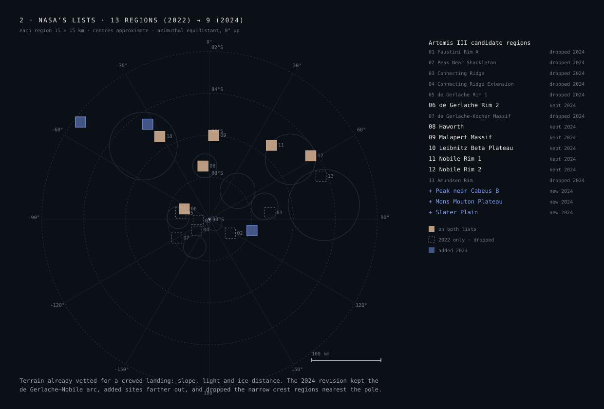
STEP 2 · NASA’s vetting: 13 candidate regions (August 2022) revised to 9 (October 2024), each 15 × 15 km and screened for slope, light and ice distance. The revision dropped the narrow crest regions nearest the pole and added terrain farther out.
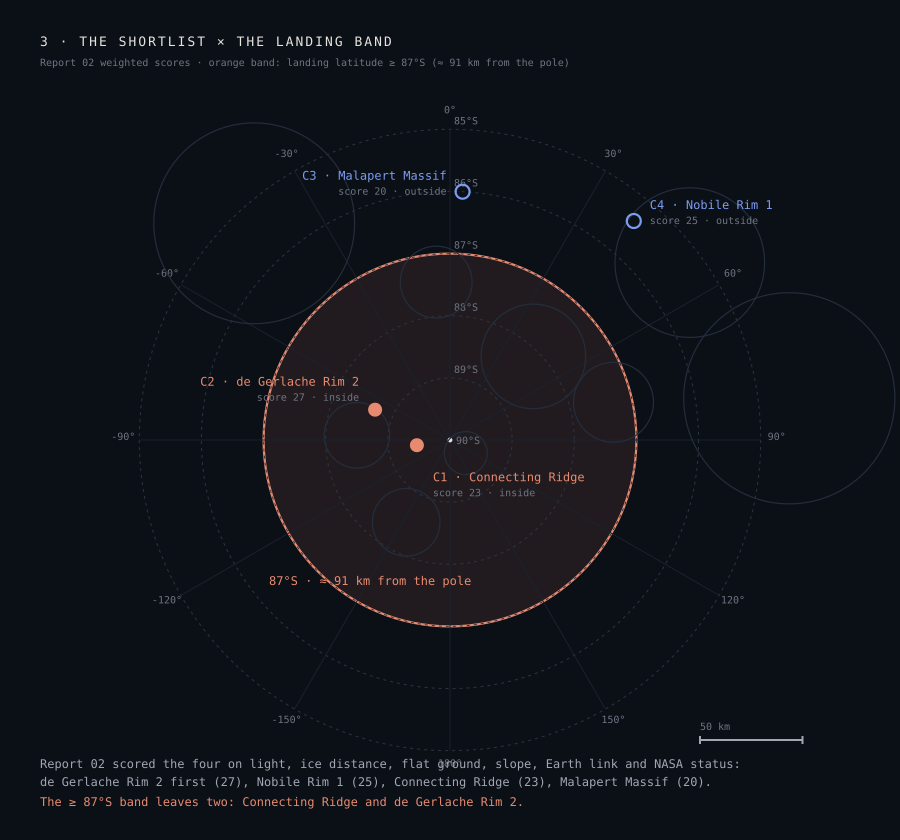
STEP 3–4 · The shortlist against the landing band: Report 02 scored four regions on six weighted criteria; the ≥ 87°S landing band of the expected transport leaves two of them standing.
The fourth filter comes from the transport. ispace’s Mission 4 — planned for 2029 on the ULTRA lander, funded under Japan’s Space Strategy Fund for high-precision polar landing — works to a landing latitude of 87°S or higher, a band of roughly 26,000 km² around the pole. The band says where a lander may go; its 100 m landing accuracy is what lets it arrive next to a prepared pad inside that band. Drawn on the map, the band keeps Connecting Ridge and de Gerlache Rim 2 and excludes Malapert Massif — the shortlist’s best Earth link — and Nobile Rim 1. Two candidates remain, and both stay in play: the assembly method is site-agnostic, so the pad, the dome and the job list transfer between them unchanged.
The two candidates, up close
Both sit on the rim of a cold trap: power up in the light, ice a short haul down. The layers below are illumination proxies from the report basemap, marked schematic; the working analysis uses the LOLA 5 m DEM, the Mazarico illumination map and the Diviner temperature map through JSMARS (Prof. Sounny-Slitine), and these panels are replaced by those exports as they land.
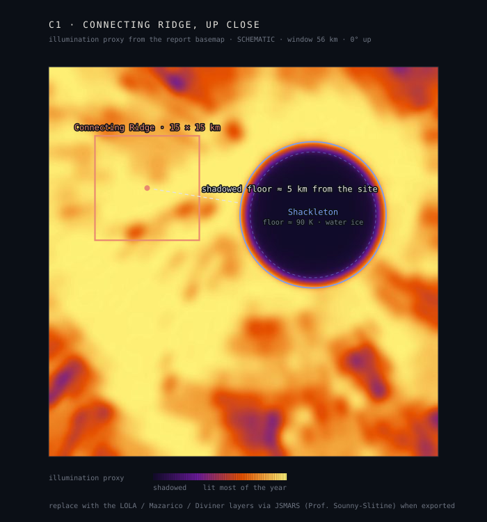
C1 · Connecting Ridge · 89.5°S, 16 km from the pole
Lightamong the most-lit ground at the pole · best points > 80 % of the year, 92 % at 2 m, 96 % on a 10 m mast · longest night 3–5 daysIceShackleton’s floor (≈ 90 K) directly beside the crest, ≈ 5 km haulGroundnarrow crest — the least flat ground of the four; pad needs the levelled shoulderSlopegentle along the crest, steep into ShackletonEarth linkEarth low, often below the horizon — relay neededStatusNASA 2022 list, dropped 2024 · inside the ≥ 87°S band · R02 score 23
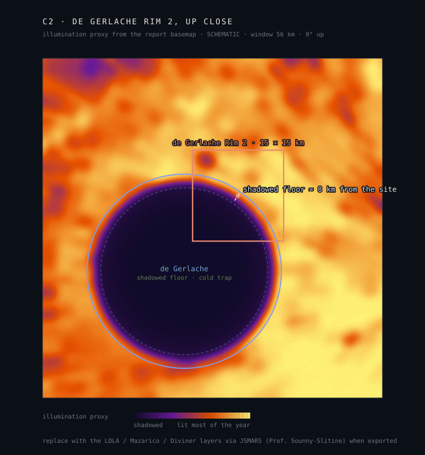
C2 · de Gerlache Rim 2 · 88.7°S, 39 km from the pole
Lighthigh rim at the end of the same ridge system — long sunlit periodsIcede Gerlache’s shadowed floor next to the rim, ≈ 8 km haulGroundwider rim terrain than the crest — more room for pad, yard and vaultSloperim gentle, crater wall steepEarth linkEarth low on this side of the pole — relay neededStatusNASA 2024 list · inside the ≥ 87°S band · R02 score 27, first of the four
Candidate
Latitude
From the pole
R02 score
≥ 87°S
C1 · Connecting Ridge base site
89.5°S
16 km
23
inside
C2 · de Gerlache Rim 2
88.7°S
39 km
27
inside
C3 · Malapert Massif
86.0°S
121 km
20
outside
C4 · Nobile Rim 1
85.4°S
139 km
25
outside
Region centres approximate, from published polar maps; Artemis III lists: NASA, Aug 2022 (13 regions) and Oct 2024 (9). Mission 4 parameters from ispace’s public material; the public documents name the south polar region, and the 87°S figure is the programme’s stated working value, drawn here as given. Connecting Ridge remains the working base site of this series; de Gerlache Rim 2 is carried as the scored alternative.
03 · From the plan to physics
Four pieces turn the job list into a physical build
Report 04’s plans were kinematic: every block had a pose, a station and a time, but nothing pushed back. Report 05 adds the physics and the robot middleware: every construction sequence is replayed block by block in Isaac Sim (PhysX 6.1) under the Moon’s surface conditions — 1.62 m/s² gravity and dry block-on-block contact — on an RTX laptop, with a lightweight pybullet script as the quick pre-check during development.
4D BIM export
Every block an IfcBuildingElementPart with mesh, mass and status (planned / set / measured); every job an IfcTask with start, finish and the Dragon as resource. IFC 4, zero schema errors, geometry identical to the plan (0.000 mm); opens in any IFC viewer, plays in Bonsai.
Stage stability check
The dome and pad built block by block, stage by stage: after every placement the whole structure settles and every drift is recorded — 283 stages for the pad, 216 for the dome. A pybullet script version of the same check runs as the quick pre-check while iterating.
Isaac Sim stage check
The sequence run in PhysX (Isaac Sim 6.1): the findings quoted in this report come from these runs. About 10 min of physics per pad run, 7 min per dome run.
ROS 2 timeline player
An ament_python package that plays a Report 04 plan as ROS 2 messages: arm and spine targets into the Motion Stack, base velocity, gripper state, current job. 16 offline tests pass on the real plans.
04 · Constructability tests · pad
The pad is stable at every stage
The pad’s construction sequence has been tested in Isaac Sim under the Moon’s surface physics: 1.62 m/s² gravity, dry block-on-block contact (friction 0.6) and 1 mm joint clearance. Built block by block through all 283 placement stages and settled after the last paver, no block moved more than 5 mm — final drift 0.5 mm — and no temporary support was needed: the centre-out sequence can be built exactly as planned. The remaining lunar loads are staged next: the Report 02 moonquake loadings (pseudo-static K × g) re-run on the finished pad, and day–night thermal cycling of the dry joints.
The construction plan · 283 pavers, centre out · every paver numbered with its build step · confirmed stable at every one of its 283 stages in the Isaac Sim check
moonquake K × g on the finished pad · thermal cycling of dry joints
Why it passes
Every paver lies flat on compacted ground and its neighbours close around it: nothing has anywhere to go. The pavement is the easy half of the programme, and the simulation now says so with numbers.
The sequence in simulation, wide camera · stock rows → rings from the centre → the tilted rim · 180 s story cut, Isaac Sim RTX on the LOLA terrainArm camera · the Dragon picking from the stockpile and seating pavers · the long shadows are the 9° Sun of the siteSecond arm cut · the full 283-paver sequence as a 180 s story — first pavers slow, time-lapse middle, last paver slow
05 · Constructability tests · dome
Testing the construction sequence of the dome
The dome is the second constructability test, and the hard one. The test is the same as the pad’s: the Report 04 sequence — 216 blocks, built from inside through the doorway — is replayed block by block in Isaac Sim under the Moon’s surface physics (1.62 m/s² gravity, dry block-on-block contact, friction 0.6), the whole structure settles after every placement, and every block’s drift is recorded; the finished dome is tested the same way, set complete and settled. Moonquake loading (K × g) and day–night thermal cycling are staged next, as for the pad. The dry sequence fails — the findings below — and the chapter ends with the method that fixes it.
The Report 04 dome · ShellA at 0.6×, 4.8 m across, 1.65 m rise, 216 blocks · the build sequence this report stress-tests
Dry build, free
Result
First failure
stage 11 · block 4, resting partly on doorway block 211, left open by the plan
Ring 3
6 of 21 blocks fall ≈ 0.5 m before their lockers arrive
End state
188 of 194 blocks moved > 5 mm, by up to ≈ 2.9 m
Failure mode
blocks rotate inward, up to 178° — overturning, not sliding
Finished dome
stands everywhere except at the open door: four blocks fall, sag ≤ 37 mm above the opening
Two conclusions
The dry dome works as a structure; the door needs a frame or lintel; and the build needs temporary support for every open course. The staged Isaac Sim runs tell this story block for block.
What we tried before it stood
Six rounds of changes, each answering the previous failure. The pattern that emerged: the collapse is geometric — blocks overturn inward before their course closes — so roughness and heaviness help at the margins, and only support or a different geometry changes the outcome.
1 · More friction — no
At friction 0.8 and 1.0 the dry dome still collapses (164 and 170 blocks over 20 mm). The failing blocks rotate rather than slide, so a rougher surface cannot hold them.
2 · Less tilt — worse
Rebuilt with 0° or 20° side faces, the first block already tips on the plinth. 35.3° is the best of the family: it gives each block a near-level seat (9–10° at ring 1, against 36° at 0° tilt). Above 35.3° neighbouring blocks overlap.
3 · Shift the centre of gravity — helps, not enough
A graded block — dense sintered outer half, light inner half — moves the centre of mass outward. Damage falls steadily (table below), but the first failure stays at stage 11: the overturning is delayed, not removed.
4 · Door frame and six keyed ribs — helps, not enough
A precast door frame and six keyed rib lines every 60° (43 blocks) each reduce the damage; none makes ShellA stand while it is built.
5 · Change the geometry — stands, at a price
A level-bed (corbelled) dome of wedge blocks stepping in by 25 % of the block depth stands without any support: largest movement 32 mm in pybullet, 19 mm in PhysX. Steps of 35 % and 45 % fail in course 3. The price is shape: at 1.65 m it leaves a 3.4 m opening on top. It stays as the fallback.
6 · Temporary staples — ShellA stands
Tie each new block to the blocks it rests on with a small removable staple until its ring closes. Nothing stands inside the dome, the robot plan is unchanged apart from one staple action per block, and the closed shell carries itself. The method below.
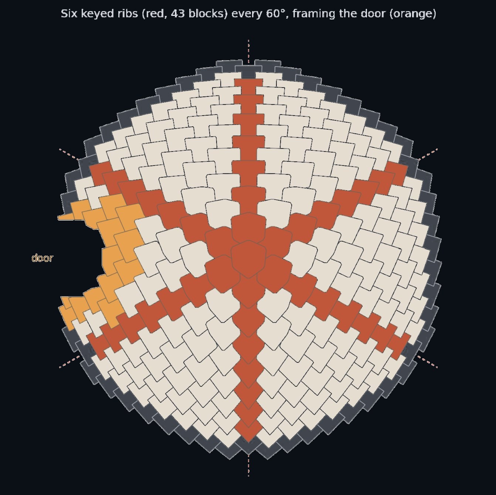
Iteration 4 · six keyed ribs (43 blocks) every 60°, two framing the door · reduces the damage, does not stop the first failure
Iteration 3 in numbers · the graded block
Variant
Outer / inner half
CoM shift
Blocks moved > 5 mm
Baseline
2,300 / 2,300 kg/m³
0 mm
82
Graded 15 mm
2,600 / 1,400
16 mm
75
Graded 30 mm
3,000 / 900
29 mm
63
Graded 50 mm
3,000 / 75
51 mm
35
Same shape, same fit, same interlock — only the density is split between the two halves (pybullet, 22 Oct; first failure stage 11 in every case; Isaac Sim COM_OUT runs pending). The near-hollow 50 mm variant is also the lightest to handle, a second reason to grade.
Supports that failed first
Piers and beams on six lines block the robot: 57 of 194 blocks lose their station. One strut per block fails about 120–160 releases; struts moved up course by course needed 1,868 re-props of 1,949 releases. Hence staples.
The solution: temporary staples
A steel U-clip drops into slots cast across each bed joint — the key-slot idea from the column blocks — and ties the new block to the blocks it rests on until its ring closes. A closed ring wedges itself tight like an arch; when the crown is set, every staple comes out and is reused on the next dome.
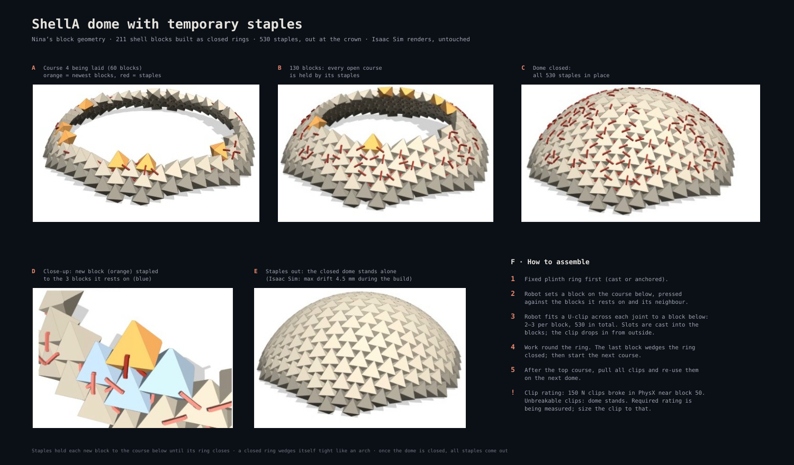
The staple build · 211 shell blocks as closed rings · 530 staples, 2–3 per block · staples out at the crown: the dome stands alone, max drift 4.5 mm during the build
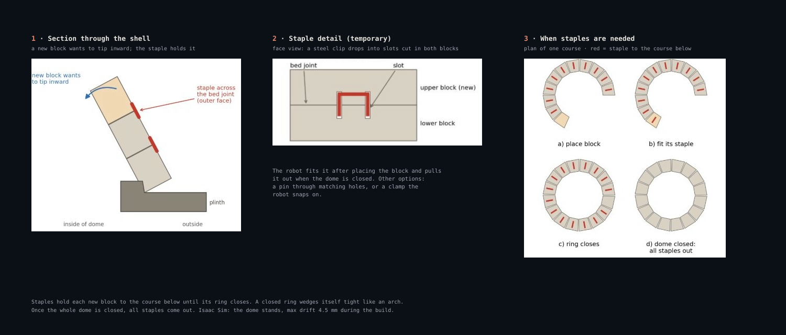
Why and where · a new block wants to tip inward, the staple holds it across the bed joint; once the ring closes, the staples of that course are done
Stapled build
Result
Staple rating 150 N
no block over 7 mm at any stage (pybullet)
All staples struck at the crown
every block within 5 mm, mean 1.5 mm
300 N
same result; 600 N shows solver artefacts
Isaac Sim PhysX
140 of 194 blocks needed holding (72 %); shell at 16.9 mm while props stay in
Robot plan
unchanged · one staple action per block · 530 staples, all reused
How to assemble
Fixed plinth ring first. Set the block against its neighbours; fit its 2–3 staples from outside; work round the ring — the last block wedges it closed; next course. After the top course, pull every clip.
Open number
150 N clips broke in PhysX near block 50; unbreakable clips hold the dome. The required rating is being measured now — the clip is sized to that, and the slot detail on the block follows it.
The dome build, in simulation
The sequence rendered on the site terrain, three cameras · 180 s story cuts — plinth ring, courses closing from inside, the crown.
Wide camera · stock rows, the plinth ring, the shell closing on the cratered patchFollow camera · over the Dragon’s shoulder as the courses rise around itArm camera · seating blocks on the course below, pressed against their neighbours
06 · The door
A door arch cut into the closed shell
The finished-dome check said it plainly: the shell stands, the opening does not — four blocks beside the raw doorway fall and the blocks above sag. So the door gets a frame, set first like a precast door ring, and the shell courses bear on it.
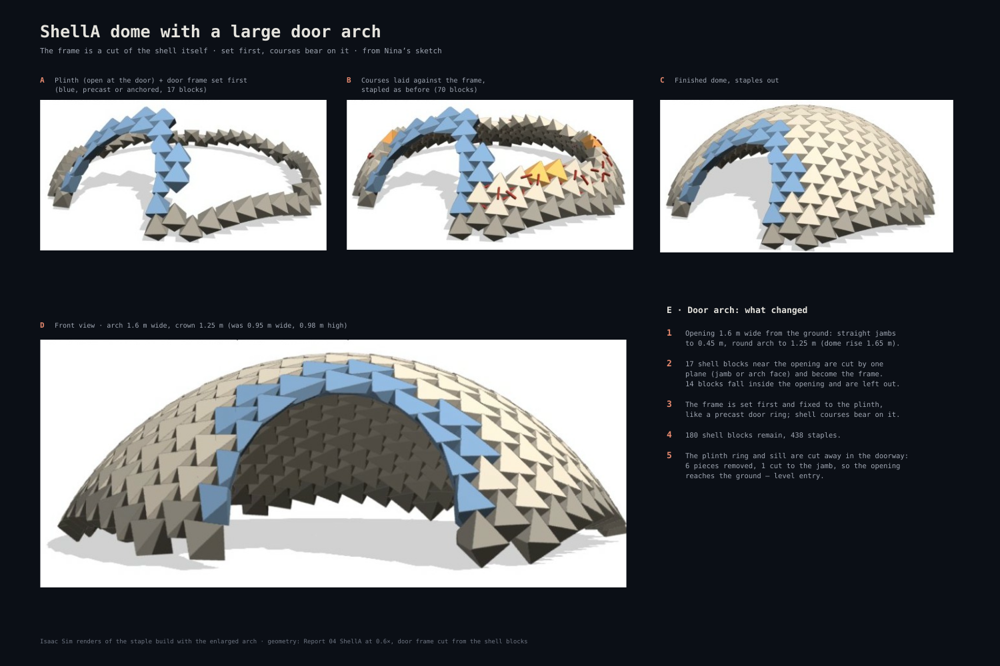
The door-arch build · frame (blue) precast or anchored, set before the courses · opening 1.6 m wide, crown 1.25 m · 180 shell blocks, 438 staples
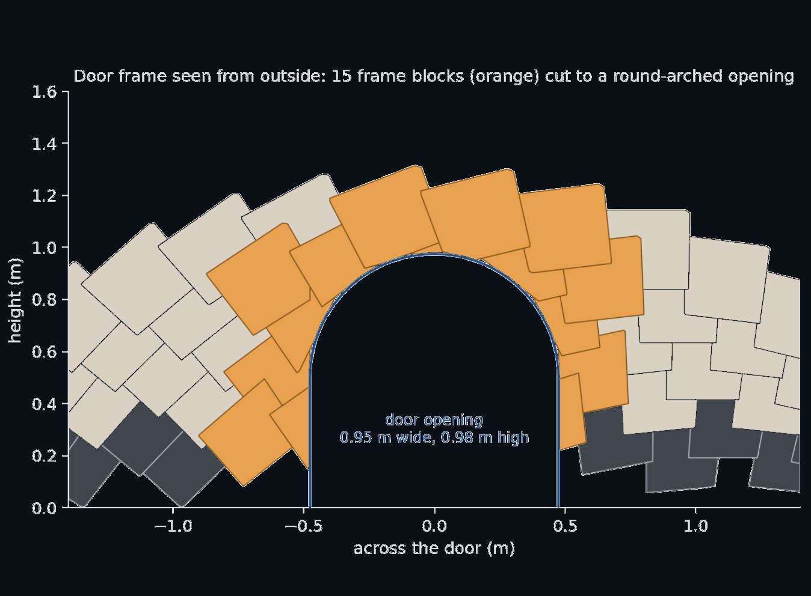
The smaller first version · 15 frame blocks cut to a 0.95 × 0.98 m round arch · superseded by the 1.6 m arch above
What changes at the door
17 shell blocks near the opening are cut by one plane — jamb or arch face — and become the frame; 14 blocks fall inside the opening and are left out. The plinth ring and sill are cut away in the doorway (6 pieces removed, 1 cut to the jamb), so the opening reaches the ground for level entry.
Why an arch
The arch carries the shell above the opening the way the closed rings carry the dome: in compression, with no lintel in bending. The straight jambs rise to 0.45 m, the round arch closes at 1.25 m — inside a 1.65 m dome.
Still to check
The same cut through the stapled build in Isaac Sim, with breakable fixed joints standing in for the clips.
07 · Constructability tests · column
Three ways to build the column, timed
The power-plant column is the third constructability test. Three buildable options from the Report 03 tower family were planned, sequenced and timed for one Dragon working from six stations around the column — pallet of frames to its right, panel stack to its left — and the films below replay those sequences with the robot’s kinematics on the site terrain. All three carry the same split as the Report 03 towers: structure printed from the site, precision panels from the cargo manifest. The block-by-block stage-stability check, as run for the pad and the dome, is queued next on the chosen option.
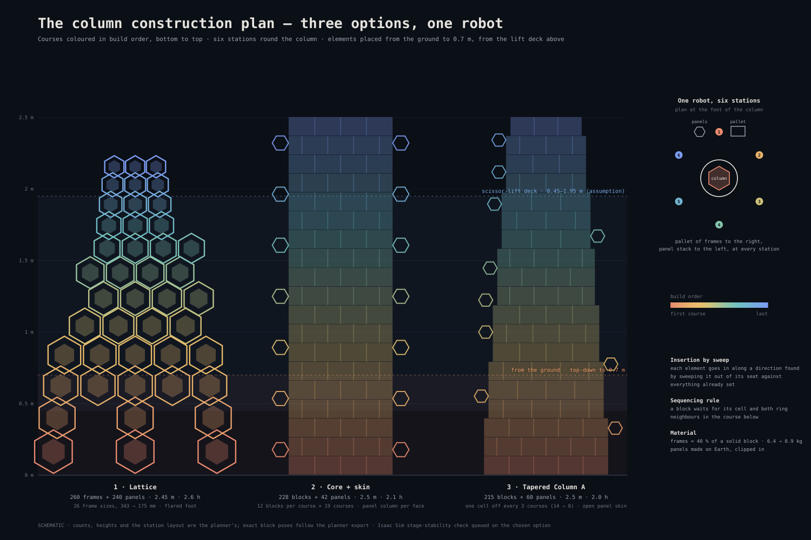
The construction plan · courses coloured in build order, bottom to top · placed from the ground to 0.7 m, from the scissor-lift deck above · schematic until the exact planner poses are exported
Option
Elements
Height
Robot time
1 · Lattice
260 frames + 240 panels · 26 frame sizes, 343 → 175 mm across
2.45 m
2.6 h
2 · Core + skin
228 blocks + 42 panels
2.5 m
2.1 h
3 · Tapered Column A
215 blocks + 60 panels
2.5 m
2.0 h
Option 1 · The lattice
The block family with its centre opened: a tapering honeycomb of hexagonal frames, a precision panel clipped into every frame, the foot flaring open into legs. A frame uses about 40 % of a solid block’s material — 6.4 kg at the foot down to 0.9 kg at the top — so it is the lightest option to print and to handle, and the most open to cabling and maintenance. It is also the slowest: 26 frame sizes and 500 elements make it the longest pallet list and the longest build, 2.6 h of robot time.
Wide camera · pallets, panel stacks, the scissor-lift deck for the upper courses · 180 s story cutFollow camera · frames and panels going in, 9,487 s of robot time in 180 s — first blocks slow, time-lapse middle, last block slow
Option 2 · Core + skin
A solid Column A core — twelve flat-laid blocks per course in the ring of pad-grid cells, nineteen courses — with one column of hexagonal panel modules clipped to each face. The structure is the simplest to print (one block, flat-laid like the pad) and the stockiest of the three; the panels stay serviceable from outside. Quicker than the lattice at 2.1 h, with the fewest element types. Its open items are the chapter’s: one block grazes a neighbour on approach, and a few descents seat up to 3 cm off.
Wide camera · the core ring rising course by course, panel columns clipped to the facesFollow camera · flat-laid blocks seated against their ring neighbours, interlocks sliding home
Option 3 · Tapered Column A
The same Column A block, brick-bonded in closed rings that drop one cell every three courses — fourteen cells at the foot to eight at the top — with an open skin of panels hung on the cone. The taper does the structural work the lattice does with geometry and the core does with mass: each ring sits fully on the one below, so it is the fastest build at 2.0 h. The ring geometry is rebuilt from a screenshot for now; the exact Grasshopper block planes replace it when they arrive.
Wide camera · the cone narrowing one cell every three courses, panels hung as the rings closeFollow camera · brick-bond seating on the ring below; a block waits for its cell and both neighbours
Reach and the lift
From the ground the Dragon places top-down to about 0.7 m and sideways to about 1.2 m. Above that it works from a scissor-lift deck, 0.45–1.95 m — a placeholder module and an open assumption.
Insertion, not dropping
Each element goes in along a direction found by sweeping it out of its seat against everything already set. Column A blocks interlock, so many slide in along a neighbour’s tilted face rather than dropping straight down.
Sequencing rule
A Column A block waits for its cell and both ring neighbours in the course below; without the rule, the ring locks itself out.
Material
Frames and blocks printed or sintered from regolith. A frame uses about 40 % of a solid block’s material: 6.4 kg at the foot down to 0.9 kg at the top.
Panels
Made on Earth, clipped in — the same split as the power towers in Report 03: structure from the site, precision from the cargo manifest.
Open items
One core-and-skin block grazes a neighbour on approach and a few descents seat up to 3 cm off; no arm-vs-structure collision check yet; Column A geometry to be swapped for the exact Grasshopper planes.
08 · Simulation methodology
How the environment and the replay are built
Everything above runs from the same plan files. The environment first: a real LOLA digital elevation model of the site as the ground — a 5 m/pixel patch of about 16 × 16 km, the size of one candidate region — with far terrain to 8 km and the Sun held at 9° above the horizon, azimuth 215°: the low light and long shadows the pole actually gives. The structures’ block poses come from the Report 04 planner, and the films replay the job lists with the real Dragon kinematics, every joint angle from the planner. The selected square is not a square on a map here; it is the terrain under the robots. The constructability chapters above add the physics verdict on these same sequences.
Open calls, nearest first; the two bold deadlines are the ones the Report 05 schedule is built around. Dates marked “est.” are estimated from the previous edition and need checking when the call is published.
Already closed for 2027: ICRA 2027 (papers closed 16 Sep 2026), CAADRIA 2027, CAAD Futures 2027, IEEE Aerospace 2027, AIAA ASCEND 2027. Worth attending this year without a paper: i-SAIRAS + iSpaRo, 3–6 Nov 2026, Cologne.
10 · Next steps
Two harder cases, and the numbers still open
Prof. Yoshida set two demonstration cases that reuse the whole pipeline. The solar power plant goes first — simpler blocks, more driving, a clear story for a keynote — then the complex dome once the staple result is confirmed in Isaac Sim.
Solar power plant
Mast footings as square interlock pads with a central socket, a trench liner over the power cable, pavers and berm, then the mast and panels docked as plug-ins. Tests many small structures across the site and plug-in tolerance at the socket.
Complex dome
A free-form shell from the same block family, with a framed doorway and a span the robot builds from inside: courses of changing tilt, temporary support, the door frame — everything this report established, on a harder shape.
Isaac Sim confirmations
The dome PhysX runs finishing; the graded-block COM_OUT runs; the stapled build with breakable fixed joints; the door cut through the closed shell; the stage-stability check on the chosen column option.
Design questions
The staple’s required rating (being measured) and the slot detail on the block; whether support posts, if used, become permanent ribs; the door frame’s final shape; the Dragon’s real joint speed limits.